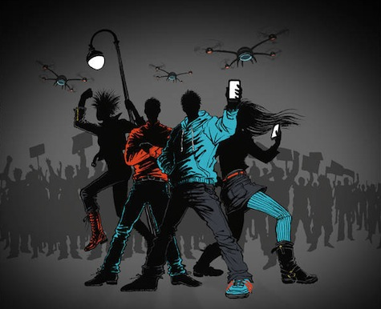
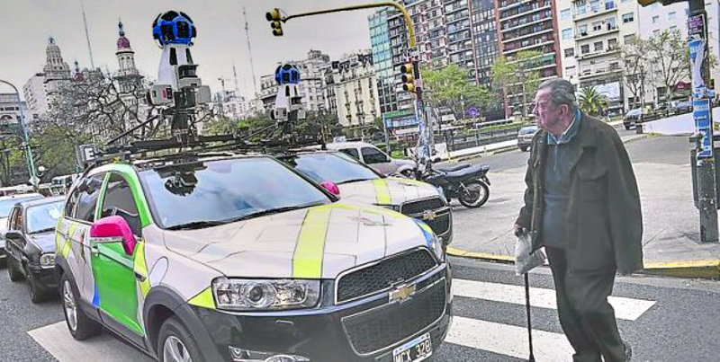
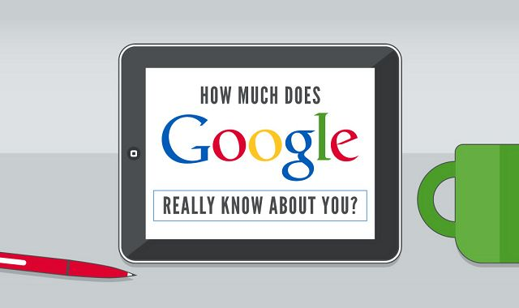
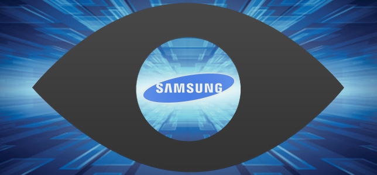
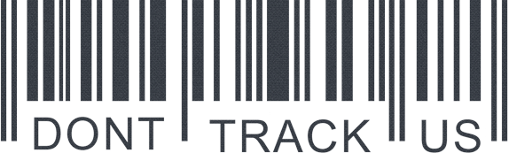
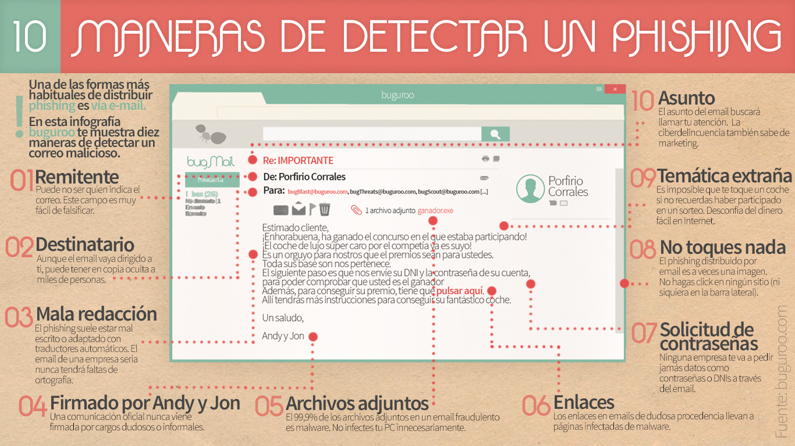
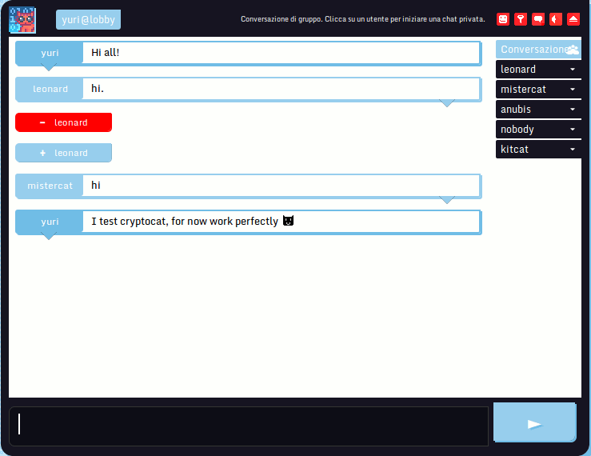
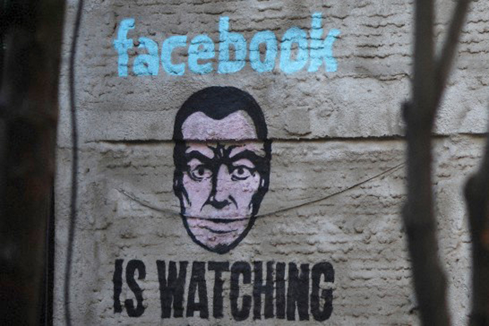
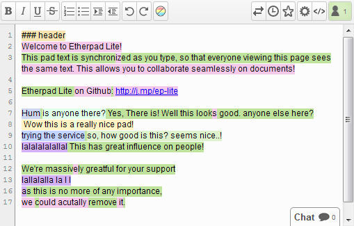

- Concientizar sobre la privacidad en Internet.

- Difundir software libre para mantener la privacidad.
- En la medida de lo posible se instalaran las aplicaciones básicas y se mostrará como usarlas.
- Generar interés en los asistentes para ser más cuidadosos con su privacidad.
- ¿Por qué esta presentación? ¿Para qué? Charla de sensibilización
- ¿Cuánto conoce Google sobre nosotros?


- Cuando una empresa te da gratis un servicio la mercancía sos vos (tus datos)
- Derecho al anonimato y utilizar el cifrado
- Toda persona tiene derecho a comunicarse de forma anónima en Internet.
- Toda persona tiene derecho a utilizar la tecnología de encriptación para garantizar una comunicación segura, privada y anónima.

- Elección del navegador (Prohibido explorer!)
- Extensiones (add-ons) del navegador
- Privacy Badger: blocks spying ads and invisible trackers
- HTTPS Everywhere: Encrypt the Web! Automatically use HTTPS security on many sites.
- Disconnect: Make the web faster, more private, and more secure
- Ghostery: Protect your privacy. See who’s tracking your web browsing and block them
- Disconnect+µBlock: para reeplazar Ghostery.
- Blur (Formerly DoNotTrackMe): Protect your Passwords, Payments, and Privacy
- AdBlock Edge: extension for blocking advertisements on the web.
- DuckDuckGo: no-tracking privacy policy
- StartPage: Web search results from Google in complete privacy
- Ixquick: provides search results from over ten best search engines in full privacy.
- Metadata
- Campaña: que vuelvan los alias
- Caso cajera despedida del trabajo.
- Alternativas a WhatsApp
- TextSecure
- Wickr
- telegram
- Alternativas a gmail
- ¿Que paso con lavabit?
- Mantenidos por la comunidad
- RiseUp
- Autistici/Inventati
- OpenMailbox
- Enfocados en la seguridad desde el diseño
- Privacidad en el Mail
- GPG
- Thunderbird/Claws & Enigmail (para el manejo de las llaves)
- Proteger el mail
- ¿Escribirías tu nro de cel en un paredón?
- No colocar la dirección en una web
Phishing

- Mensajeria instantánea
- Pidgin & OTR
- Tox: Instant messaging, video conferencing, and more
- Jabber/XMPP
- Cryptocat: Chat with privacy. Group chat, file sharing, and more!

- OTR
- ricochet: Anonymous peer-to-peer instant messaging
No todo es Facebook

- Lista de correo
- Reddit
- Documentos Colaborativos
- Etherpad: online editor providing collaborative editing in really real-time

- Sincronizar archivos entre dispositivos
- RetroShare (P2P: email descentralizado, compartir archivos, cifrado c/gpg)
- ¿Qué pasó con TrueCrypt?
- Zulucrypt (maneja volumenes previamente creado con TrueCrypt)
- Tc-play
- DiskCryptor
- AES Crypt
- Cryptsetup
- CipherShed
- VeraCrypt
Iván Arce, Maximiliano Giraldes, Enrique Chaparro, Tess, Evelin Heidel, Teresa Sempere García, Pascual Calicchio